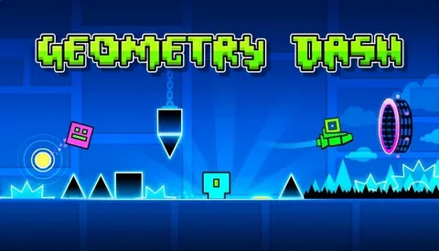

Geometry Dash, RobTop Games imzalı, müzikle birebir senkronize edilen ritim ve engel atlama oyunudur. Tek tuşla kontrol edilen karakterinizle dar geçitlerden, sivri dikenlerden ve hareketli engellerden geçerken her seviyenin temposuna ayak uydurmanız gerekir. Basit görünse de hassas zamanlama ve pratik isteyen yapısı sayesinde saatlerce oynanabilir bir deneyim sunar. Kendi seviyelerinizi tasarlayabileceğiniz güçlü editörü ve topluluk tarafından paylaşılan binlerce kullanıcı haritası sayesinde içerik neredeyse bitmez. BallasNet üzerinden Geometry Dash’in sistem ihtiyaçlarını inceleyebilir, benzer ritim ve platform oyunlarını keşfedebilirsiniz.
SİSTEM GEREKSİNİMLERİ
Minimum
- OS: Windows 7 / 8 / 10
- İşlemci: 1.5 GHz veya üstü
- RAM: 1 GB
- Ekran Kartı: DirectX 9 uyumlu
- Disk: 100 MB boş alan
Önerilen
- OS: Windows 10 / 11
- İşlemci: 2 GHz+
- RAM: 2 GB
- Ekran Kartı: DirectX 11 uyumlu
- Disk: 200 MB boş alan
LİNKLER
RESMİ İNDİRME LİNKLERİ
BENZER OYUNLAR
Geometry Dash Nedir?
Geometry Dash, RobTop Games’in 2013’te çıkardığı ve yıllar içinde güncellemelerle büyüyen ritim tabanlı bir platform oyunudur. Karakteriniz sürekli ileri doğru ilerler; sizin tek göreviniz doğru anda zıplamak, uçmak ya da dönüş yapmak. Her seviye bir müzik parçasıyla senkronize tasarlandığı için ritim duygunuz ve refleksleriniz sürekli test edilir. Resmi seviyelerin yanında oyuncuların hazırladığı yüz binlerce kullanıcı haritası bulunur; bu sayede zorluk seviyesi ve tarz açısından neredeyse sınırsız seçenek sunar.
Oyun görünüşte basit kontrollerle ilerlese de “sadece bir zıplama” ile geçilemeyen anlar bolca yer alır. Dar koridorlar, hareketli platformlar, görünmez engeller ve ani tempo değişiklikleri sayesinde her deneme yeni bir öğrenme süreci haline gelir. Başarısız olduğunuzda seviyenin başından değil, son checkpoint’ten devam etme seçeneği de vardır; bu da uzun ve zorlu map’lerde motivasyonu korumaya yardımcı olur.
Oynanış Özellikleri
- Tek tuş / tık kontrolüyle karakteri yönetin; zamanlama her şeydir.
- Resmi seviyeler + devasa kullanıcı oluşturma topluluğu.
- Müzikle senkronize engel dizilimleri ve ritim odaklı ilerleme.
- Icon, renk, trail ve efektlerle karakterinizi kişiselleştirin.
- Seviye editörü sayesinde kendi map’lerinizi tasarlayıp paylaşın.
- Online liderlik tabloları ve günlük / haftalık zorluklar.
Geometry Dash Nasıl Oynanır?
Oyuna başladığınızda ilk resmi seviyelerden birini seçerek temel mekanikleri öğrenirsiniz. Zıplama zamanlamasını yakalamak, farklı formlara (küp, gemi, top, UFO, dalga, robot, örümcek vb.) alışmak ve engellerin ritimle nasıl eşleştiğini kavramak ilk saatlerin odak noktasıdır. Daha sonra pratik seviyelere ve kullanıcı haritalarına geçerek becerilerinizi geliştirebilirsiniz. İsterseniz editörü açıp kendi müziklerinizi yükleyerek tamamen özgün haritalar da hazırlayabilirsiniz.
Güncellemeler ve İçerik
Yıllar içinde gelen 2.0, 2.1 ve 2.2 gibi büyük güncellemelerle yeni formlar, efektler, editör araçları ve arayüz iyileştirmeleri eklendi. Özellikle 2.2 güncellemesi platformlar, olay tetikleyicileri ve kamera kontrolleri konusunda ciddi yenilikler getirdi. Topluluk hâlâ aktif şekilde yeni map’ler üretmeye ve zorluk rekorları kırmaya devam ediyor.
VİRÜS TARAMASI SONUÇLARI
Geometry Dash oyun dosyalarını kapsamlı bir virüs taramasından geçirdik: Taranan dosyalar: 180. Bulunan virüs/zararlı yazılım sayısı: 0. Bu oyunu gönül rahatlığıyla oynayabilirsiniz.